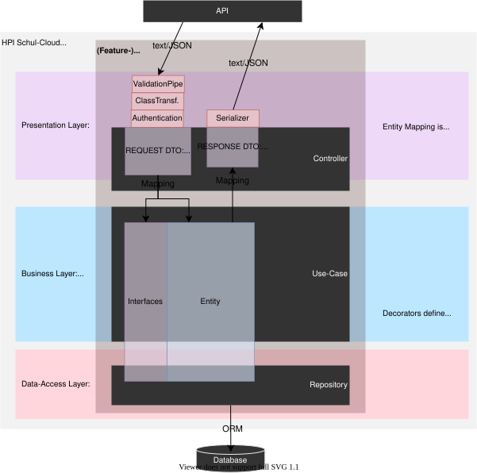

The server app located in /apps/server is structured like. Beside each ts-file, a test file _.spec.ts has to be added for unit tests (hidden for simplification). Use index.ts files that combine a folders content and export all files from within of the folder using export _ from './file' where this makes sense. When there are naming conflicts, use more specific names and correct concepts. Think about not to create sub-folders, when only one concept exist.
src/ // sourcecode & unit tests
- config/ // for global definitions
- modules/ // for your NestJS modules
- [module] // where [module] could be like user, homework, school
- entity/
- <entity>.entity.ts // (where <entity> might be a user, news, ... owned by the module) exports entity class & document type
- <related-info>.entity.ts // where related-info is a partial of another entity used in the entity above
- index.ts // exports all entities
- controller/ // where controllers define the api
- dto/ // dto's define api in/out types as a class with annotations
- <action->[params].ts // (like create-user.params.ts)
- <data->[response].ts // (like create-user.response.ts)
- index.ts // exports all dto's
- <module>.controller.ts // defines rest api, references main service file
- <other>.controller.ts // think about a new module when require multiple controllers :)
- repo/ // repositories take care to load/persist/... entities
- schema/ // contains schema imports from legacy app or new definitions (might be replaced by OR mapper)
- <entity>.schema.ts // exports (legacy-) mongoose schemas
- <entity>.repo.ts // where entity might be user, news, school
- service/ // for technical dependencies (libraries, infrastructure layer concerns)
- <module>.service.ts // the modules main service file, might be exported for other modules
- <other>.service.ts // use services not for features
- mapper/
- <entity>.mapper.ts // mapper for a domain entity, should contain mapDomainToResponse and mapFooToDomain
- uc/ // preferred for features
- <login-user>.uc.ts // one file per single use case (use a long name)
- <module>.module.ts // DI instructions to build the module
- shared/ // reused stuff without module ownership
- core/ // shared concepts (decorators, pipes, guards, errors, ...) folders might be added
- domain // (abstract) domain base entities which will be extended in the modules
- util/ // helpers, tools, utils can be located here (but find a better name)
test/ // contains globalSetup and globalTeardown for MongoMemoryServer for tests
For concepts (see https://docs.nestjs.com/first-steps) of NestJS put implementations in shared/core. You might use shared/utils for own solutions, assume TextUtils but when it contains text validators, move it better to shared/validators/text.validator.ts before merge. The core concepts of NestJS can be extended with ours (like repo).
In TypeScript files: for Classes we use PascalCase (names start with uppercase letter), variables use lowercase for the first letter camelCase.
When assigning names, they may end with a concept name:
A Concept might be a known term which is widely used. Samples from NestJS: Controller, Provider, Module, Middleware, Exception, Pipe, Guard, Interceptor.
Beside we have own concepts like comparator, validator (generic ones should not be part of a modules (and located in shared folder btw) or repo, use-case which might be owned by a module.
In file names, we use lowercase and minus in the beginning and end with .<concept>.ts
| File name | Class name | Concept | Location |
|---|---|---|---|
| login-user.uc.ts | LoginUserUc | use case | module/uc |
| text.validator.ts | TextValidator | validator | shared/validators |
| user.repo.ts | UserRepo | repository | module/repo |
| parse-object-id.pipe.ts | ParseObjectIdPipe | pipe | shared/pipes |
Components are defined as NestJS Modules.
To access other modules services, it can be injected anywhere. The usage is allowed only, when the module which owns that service has exported it in the modules definition.
Example :// modules/feathers/feathers-service.provider.ts
// modules/feathers/feathers.module.ts
@Module({
providers: [FeathersServiceProvider],
exports: [FeathersServiceProvider],
})
export class FeathersModule {}
The feathers module is used to handle how the application is using legacy services, when access them, inject the FeathersServiceProvider but in your module definition, import the FeathersModule.
// your module, here modules/authorization/authorization.module.ts
@Module({
imports: [FeathersModule], // here import the services module
// providers: [AuthorizationService, FeathersAuthProvider],
// exports: [AuthorizationService],
})
export class AuthorizationModule {}
// inside of your service, here feathers-auth.provider.ts
@Injectable()
export class FeathersAuthProvider {
// inject the service in constructor
constructor(private feathersServiceProvider: FeathersServiceProvider) {}
// ...
async getUserTargetPermissions(
// ...
): Promise<string[]> {
const service = this.feathersServiceProvider.getService(`path`);
const result = await service.get(...)
// ...
return result;
}
Use the feathers module introduced above to get access to legacy services.
It is important to introduce strong typing like it happened above in the FeathersAuthProvider. While the FeathersServiceProvider from the feathers module, has only an abstract implementation for all services, add a concrete service inside your module for a specific feathers-service, like above in FeathersAuthProvider.
To access a NestJS service from a legacy Feathers service you need to make the NestJS service known to the Feathers service-collection in main.ts.
This possibility should not be used for new features in Feathers, but it can help if you want to refactor a Feathers service to NestJs although other Feathers services depend on it.
// main.ts
async function bootstrap() {
// (...)
feathersExpress.services['nest-rocket-chat'] = nestApp.get(RocketChatService);
// (...)
}Afterwards you can access it the same way as you access other Feathers services with
app.service('/nest-rocket-chat');
The different layers use separately defined objects that must be mapped when crossing layers.

Further reading: https://khalilstemmler.com/articles/software-design-architecture/organizing-app-logic/
A modules api layer is defined within of controllers.
The main responsibilities of a controller is to define the REST API interface as openAPI specification and map DTO's to match the logic layers interfaces.
Example : @Post()
async create(@CurrentUser() currentUser: ICurrentUser, @Body() params: CreateNewsParams): Promise<NewsResponse> {
const news = await this.newsUc.create(
currentUser.userId,
currentUser.schoolId,
NewsMapper.mapCreateNewsToDomain(params)
);
const dto = NewsMapper.mapToResponse(news);
return dto;
}For authentication, use guards like JwtAuthGuard. It can be applied to a whole controller or a single controller method only. Then, ICurrentUser can be injected using the @CurrentUser() decorator.
Global settings of the core-module ensure request/response validation against the api definition. Simple input types might additionally use a custom pipe while for complex types injected as query/body are validated by default when parsed as DTO class.
Complex input DTOs are defined like [create-news].params.ts (class-name: CreateNewsParams).
When DTO's are shared between multiple modules, locate them in the layer-related shared folder.
Security: When exporting data, internal entities must be mapped to a response DTO class named like [news].response.dto. The mapping ensures which data of internal entities are exported.
Defining the request/response DTOs in a controller will define the openAPI specification automatically. Additional validation rules and openAPI definitions can be added using decorators. For simplification, openAPI decorators should define a type and if a property is required, while additional decorators can be used from class-validator to validate content.
It is forbidden, to directly pass a DTO to a use-case or return an Entity (or other use-case result) via REST. In-between a mapper must transform the given data, to protect the logic layer from outside implications.
The use of a mapper gives us the guarantee, that